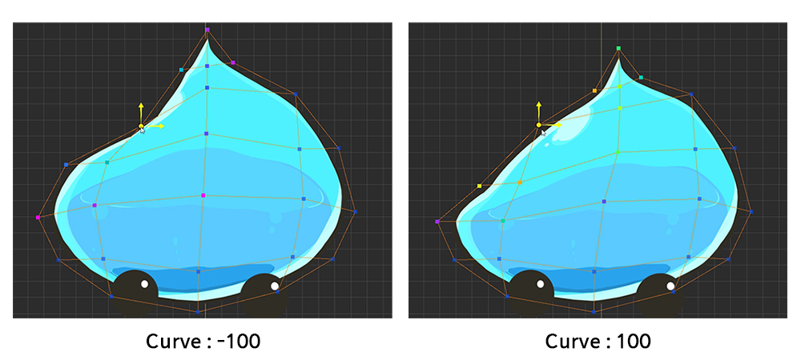

AnyPortrait > 入門ガイド > 1.8. さまざまなツールを使って頂点を編集
1.8. さまざまなツールを使って頂点を編集
1.0.0
モディファイアを使って頂点を編集すると、作業に役立ついくつかのツールが表示されます。
これらのツールを使用して作業を簡単にする方法を学ぶことができます。
Morphモディファイアで頂点を操作すると、画面上部に3つのボタンが表示されます。
1. FFD : このツールは「フリーフォーム変形(Free-Form Deformation」法で頂点を制御します。 制御点が表示され、図形を編集できます。
2. ソフト選択(Soft Selection) : 頂点を選択して編集するとき、周囲の頂点が選択され、円滑に移動されます。
3. ぼかし(Blur) : 選択した頂点の形状を滑らかに補間します。
1. FFD
FFDを実行すると、デフォルトで「9個の制御点」が表示されます。
この制御点は、頂点の編集と同じように移動、回転、およびサイズ変更が可能です。

制御点を移動して、外観を変更することができます。
FFDを使用すると、おおよその形を維持しながら、スムーズに変形することができます。
FFDでの作業が終了したら、それを適用するかキャンセルするかを決定する必要があります。
1. 適用 : 変更を適用します。
2. 元に戻す : 変更を無視して戻します。
FFDを完了せずに制御パラメータを移動したり、別の操作を実行すると、FFD操作履歴が消えます。 お気をつけください。
FFDの制御点の数を変更する
Ctrl を押しながらFFDボタンを押すと、コントロールポイントの数を設定するダイアログボックスが表示されます。
(Max OSXでは、 Command を押します)。

2. ソフト選択(Soft Selection)

ソフト選択を実行すると上記のUIが表示されます。
1. ソフト選択を終了 : アクティブなソフト選択を終了します。 （ショートカット : 右クリック ）
2. Radius : 選択した範囲を調整します。 （ショートカット : [, ] ）
3. Curve : 周囲の頂点が円滑に移動する度合い。

ソフト選択では、どの頂点が頂点カラーで一緒に選択されているかを見ることができます。
移動、回転、スケールツールにも適用されるので、滑らかな形状を維持したいときに便利です。

カーブ値が低いと、選択した頂点の近くの重みが集中的に大きくなり、カーブ値が大きければ、選択された頂点から遠いところでも重みが高くなります。
3. ぼかし(Blur)

ぼかしを実行すると、上記のUIが表示されます。
1. ぼかしを終了する : ぼかしを終了します。 (ショートカット : 右クリック )
2. Radius : 選択した範囲を調整します。 （ショートカット : [, ] ）
3. Curve : 周囲の頂点が円滑に移動する度合い。
ぼかしを適用する頂点を選択し、ぼかしツールを実行します。
ぼかしを実行すると、ぼかし領域がマウスの周りに円で表示されます。
マウスでそれをこすれば、変形された値が周囲の値と同様にしわになっていることがわかります。
ぼかしツールは、頂点を選択した後にその頂点を操作したい場合に、主に便利です。

「Vertical Position」制御パラメータに対応するように他のメッシュを修正できるようになりました。
これは手間がかかる作業です。負担持たず一つずつ作成します。
他のメッシュを選択できない場合は？
複数のメッシュで作業している場合は、マウスでクリックすると有効でない可能性があります。
画面下部の「選択ロック」ボタンがオンの場合、別のメッシュを選択することはできません。
「選択ロック」ボタンを押すか S を押してロックを解除します。

なぜ「選択ロック」を使うべきですか？
「選択ロック」がオフの場合、頂点を選択しようとしますが、別のメッシュを選択することができます。
領域を作成するためにマウスでドラッグして頂点を選択しようとすると、メッシュ選択の選択が解除されることがあります。
したがって、モディファイア編集が開始されると、「選択ロック」は常にオンになります。
便利な作業のためにショートカット「 S 」を使用してください。